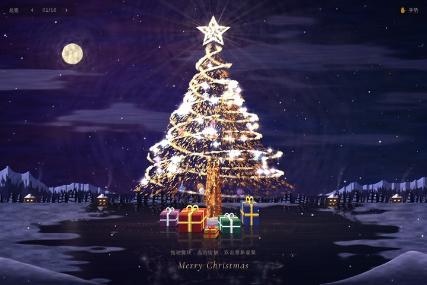
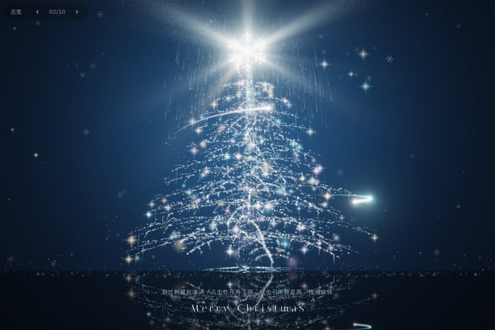
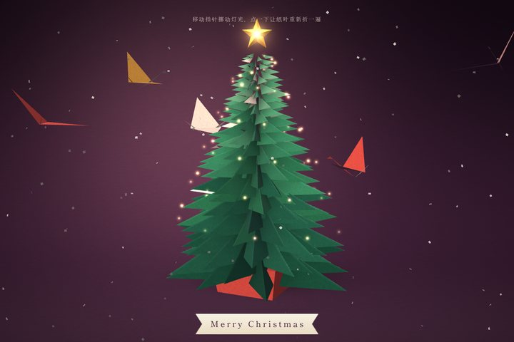
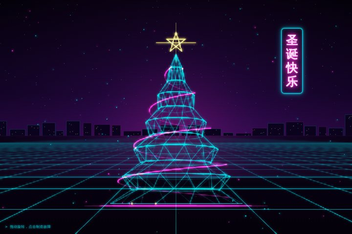
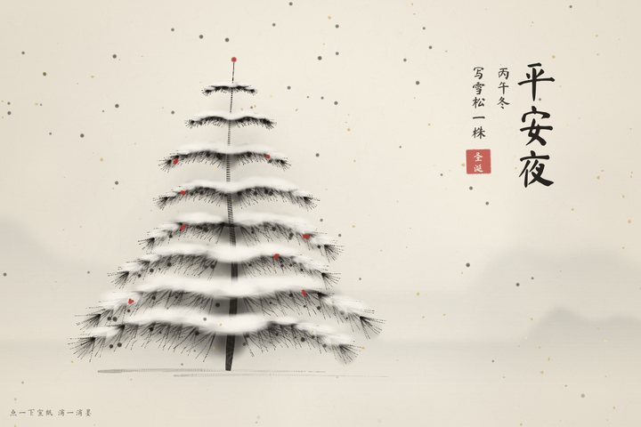
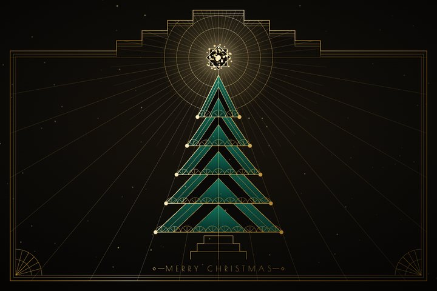
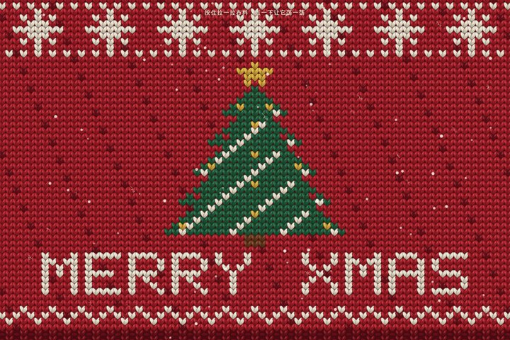
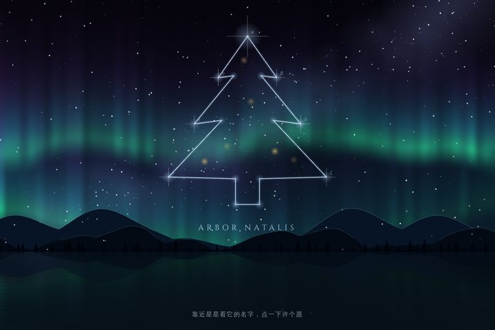
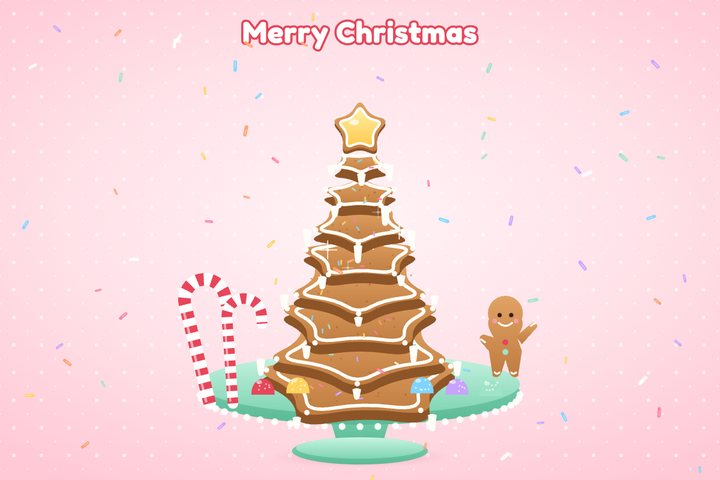
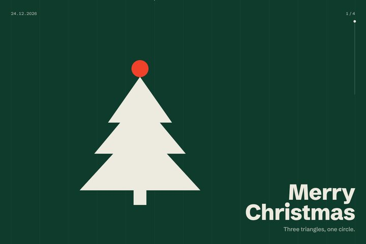

实时星尘Stardust
WebGL 粒子 + 厚涂笔触
金色星系旋转着坍缩成树，每颗光点下垫一笔厚颜料；树立在结冰的湖上，脚下堆着礼物，远处是雪山、松林和冒着炊烟的小木屋，月亮、薄云、流星和飘雪都在动；两条光带沿螺旋一直往上流。拖动旋转，点击炸开火花，双击整棵树散回星系再凝聚；打开「手势」后对着前置摄像头张开手掌，树散成金色的云，握拳又聚回来。

实时冰晶Frost
WebGL 粒子与光迹，两万四千颗光点
冰湖荡开一圈涟漪，冰晶旋风贴着湖面往上盘，把树一层层织出来；彗星拖着长尾绕树爬升，撞上树顶就迸成焰火，光脉从树根流向枝梢。划过搅起漩涡，点击整棵树炸开再飞回，双击召来彗星雨和暴风雪。

实时折纸Origami
WebGL 纸面着色，185 片折叶
一片片纸叶先展开再对折成树，纸鹤绕着飞，小灯串藏在叶间。指针就是台灯，挪动它，折痕的光影会跟着变；点一下，纸叶会重新折一遍。

实时霓虹线框Neon Wireframe
Canvas 线框，降采样辉光
像老 CRT 一样开机，线框树一圈圈描出来，港式竖排招牌接触不良地闪。左右拖动转树，点一下就是一次 RGB 撕裂故障。

实时松雪图Ink Pine
Canvas 笔触模拟，宣纸洒金
一株雪松一笔一笔写出来，题款、盖印，墨点如雪飘落。点宣纸会滴一滴墨，晕开时留下一圈水痕。

实时金箔Art Deco
SVG 描金线，共用一道金属渐变
二十年代的壁饰：金线从拱门描到树顶，七十二道光芒伸开。指针就是灯，高光跟着它扫过金面；点一下奏响一次光芒。

实时毛衣Knit
Canvas 针目贴图，三千多针
一件圣诞毛衣从下往上一行行来回织出来，金线针目会闪。按住布料能把针目撑开，轻点一下整片布料荡开波纹。

实时星座极光Aurora
着色器极光，星图连线
北方夜空里的新星座 Arbor Natalis，极光帘幕流动，湖面倒映一切。指针靠近星星会显示星名，点一下划出流星，极光随之一亮。

实时糖果童话Candy Tower
SVG 分层，弹簧物理
星形姜饼一片片从天而降，落地压扁再弹起，叠成淋满糖霜的塔。点塔它会果冻般晃，点空白处撒出会弹跳的糖粒。

实时三角与圆Triangle & Circle
DOM 几何，滚动编排
三个三角、一个矩形、一颗红点，按四拍入场。往下滚动，构图在树、雪花、节拍之间重组，红点踩着拍子跳。